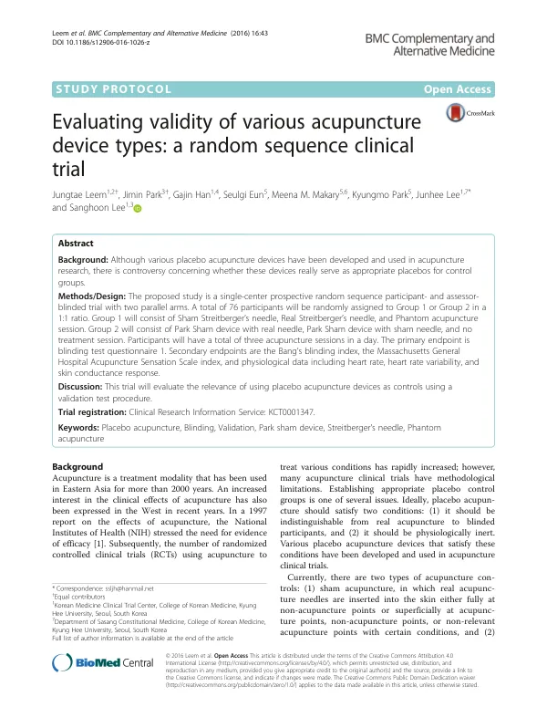

Evaluating validity of various acupuncture device types: a random sequence clinical trial
Leem J, Park J, Han G, Eun S, Makary MM, Park K, Lee J, Lee S
BMC Complementary and Alternative Medicine 16(1):43

첫 장 · 오픈액세스First page · open access
논문 소개Summary
침 임상시험에서 가장 오래된 난제는 대조군을 무엇으로 둘 것인가입니다. 좋은 위약침은 두 조건을 함께 채워야 합니다. 눈가림된 참여자가 진짜 침과 구분하지 못해야 하고, 그러면서도 생리적으로 아무 일도 일으키지 않아야 합니다. 1998년 슈트라이트베르거 침, 1999년 파크 샴 기기가 이 목적으로 나왔고 둘 다 참여자를 속이는 데는 성공했습니다. 그러나 두 기기 모두 피부에 닿기 때문에 생리 반응을 일으킨다는 한계가 남았습니다. 2014년에는 아예 접촉하지 않고 시술의 의례만 재현하는 팬텀 침이 나왔지만 복잡한 장비가 필요합니다.
이 논문은 그 세 가지 위약침이 정말 대조군에 쓸 만한지를 한자리에서 검증하는 임상시험의 프로토콜입니다. 건강한 20세부터 50세까지 76명을 두 군으로 나눕니다. 1군은 샴 슈트라이트베르거 침, 진짜 슈트라이트베르거 침, 팬텀 침을 받고 2군은 파크 기기에 진짜 바늘, 파크 기기에 샴 바늘, 무처치를 받습니다. 한 사람이 하루에 세 세션을 모두 겪되 순서는 무작위로 정해 순서 효과를 없앱니다. 한의사와 한의대생은 일반인보다 잘 구분할 것이므로 아예 제외했습니다.
일차 평가변수는 각 세션 뒤에 적는 눈가림 검사 설문입니다. 이차로 Bang 눈가림 지수와 침 감각을 재는 MASS 지수, 그리고 심박수와 심박변이도, 피부전도반응을 봅니다. 참여자는 시각 차단막 때문에 자기 다리를 직접 보지 못하고 천장 모니터의 실시간 영상만 봅니다. 팬텀 침 세션에서는 시술자가 좌측 족삼리에 손만 가까이 대고 닿지 않으며, 앞서 녹화한 진짜 침 영상을 대신 틀어 줍니다.
프로토콜이므로 결과는 없습니다. 표본 수도 일반적인 방법으로 구하지 않았습니다. 이 연구가 효과를 재는 것이 아니라 기전을 보는 연구이므로, 파일럿에는 12명 이상이면 충분하다는 통설을 근거로 세션당 30명을 잡고 탈락 20%를 더해 군당 38명, 모두 76명으로 정했습니다.
이 연구가 무엇을 위한 것인지는 뒤에 나온 연구실의 다른 논문들이 보여 줍니다. 심부전 전침 시험도, 경항통 침 시험도, 위식도역류질환 전침 시험도 모두 대조군에 파크 샴 기기를 씁니다. 어떤 대조군을 쓸 것인가는 침 시험의 결론을 좌우하는데, 그 선택의 근거를 만드는 것이 이 연구의 일이었습니다.
The oldest difficulty in acupuncture trials is what to use as a control. A good placebo needle must satisfy two conditions at once: blinded participants must be unable to tell it from real acupuncture, and it must be physiologically inert. The Streitberger needle of 1998 and the Park sham device of 1999 were built for this purpose and both succeeded in deceiving participants. Yet both touch the skin, and so provoke a physiological response. In 2014 came phantom acupuncture, which reproduces the ritual of treatment without any contact at all — but it requires complex equipment.
This paper is the protocol for a trial that tests all three placebos side by side to see whether they are fit to serve as controls. Seventy-six healthy adults aged 20 to 50 are divided into two groups. Group 1 receives sham Streitberger, real Streitberger and phantom acupuncture; group 2 receives the Park device with a real needle, the Park device with a sham needle, and no treatment. Each participant undergoes all three sessions in a single day, in a randomised order so that order effects cancel out. Korean medicine doctors and students were excluded outright, on the reasoning that they would distinguish real from placebo better than the general population.
The primary outcome is a blinding test questionnaire completed after each session. Secondary outcomes are Bang's blinding index, the Massachusetts General Hospital Acupuncture Sensation Scale, and heart rate, heart rate variability and skin conductance response. A visual barrier prevents participants from seeing their own leg; they watch only a live image on a ceiling monitor. In the phantom session the practitioner brings a hand near left ST36 without touching it, and a recording of the participant's real session is played instead.
Being a protocol, it reports no results. Nor was the sample size derived conventionally. Because this is a mechanistic rather than an efficacy study, the authors took the rule of thumb that 12 or more suffices for a pilot, set 30 per session, added a 20% dropout allowance to reach 38 per group, and so 76 in total.
What the study was for becomes clear in the laboratory's later papers. The heart failure electroacupuncture trial, the chronic neck pain trial and the gastro-oesophageal reflux trial all use the Park sham device as their control. The choice of control decides what an acupuncture trial can conclude; building the evidence for that choice was this study's work.
인용Cite
Leem J, Park J, Han G, Eun S, Makary MM, Park K, Lee J, Lee S. Evaluating validity of various acupuncture device types: a random sequence clinical trial. BMC Complementary and Alternative Medicine. 2016;16(1):43. doi:10.1186/s12906-016-1026-z